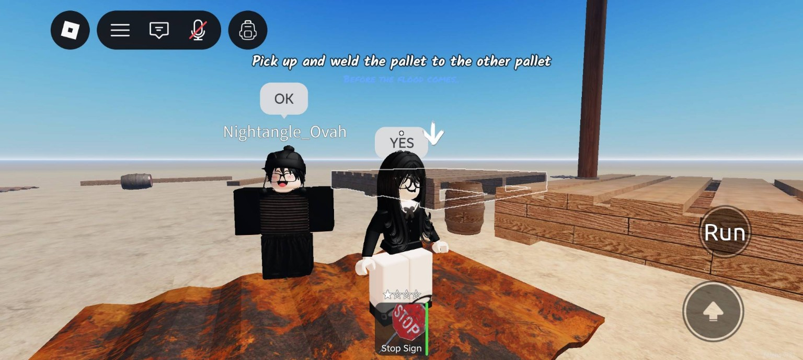
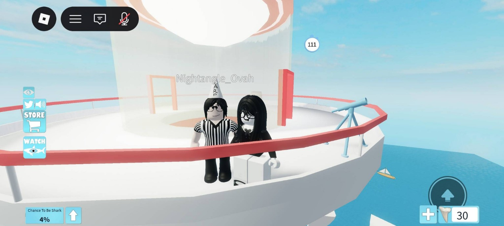
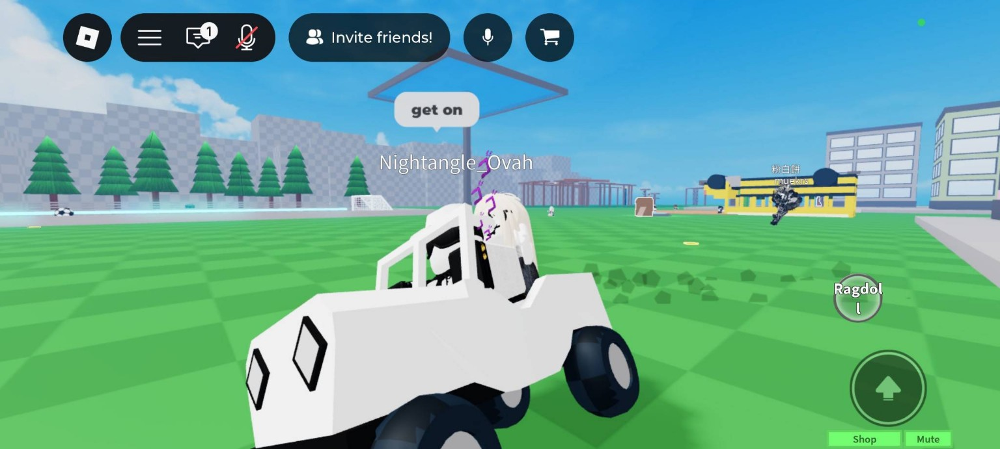
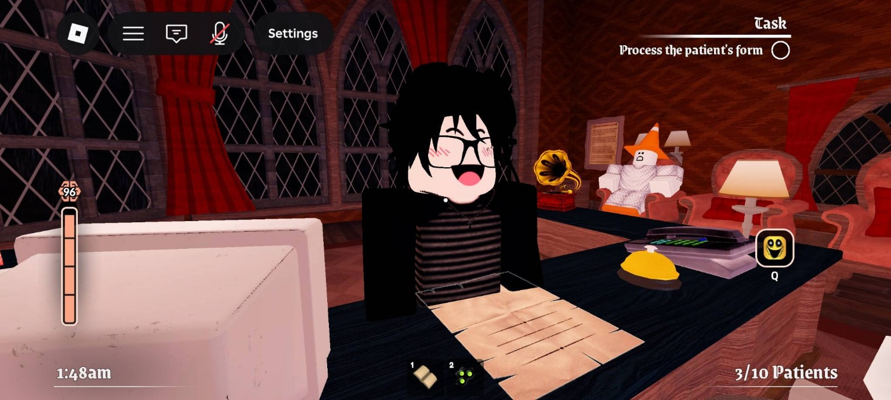
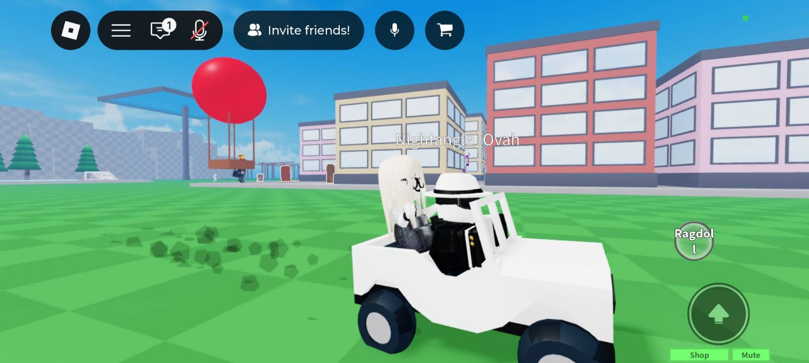
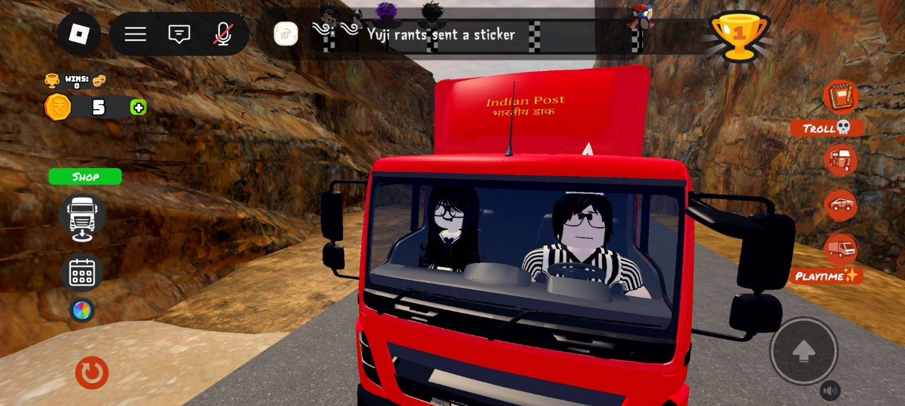

01 / ORIGIN
Two people.
One little universe.
Built from ordinary days, ridiculous adventures, late conversations, game nights, tiny gestures and every memory that became part of the story.
ENTERING OUR LITTLE UNIVERSE
OUR LITTLE UNIVERSE
A visual record of our little world.
Memories, letters, stars and everything in between.
SCROLL · DISCOVER · REMEMBER
01 / ORIGIN
Built from ordinary days, ridiculous adventures, late conversations, game nights, tiny gestures and every memory that became part of the story.
02 / MEMORY WORK
06 captured moments
and counting.






03 / CHRONOLOGY
Some stars have already happened. Others are waiting for their date.
04 / MICHELLE
Soft lights. Rain at the window. Cats asleep in the middle of everything. The quiet details that make a place feel safe.
05 / ISIRA
Helping people. Goofy pranks. Gaming nights. Genuine connections. The part of the universe that never stays still for long.
06 / LETTERS
Open a letter when you want to slow everything down.
07 / VALUES
Choose a value.
08 / CONSTELLATION
Every year can add another star. Another memory. Another chapter. Nothing here is meant to feel finished.
09 / FUTURE
New years. New places. New inside jokes. New photographs. The story stays unfinished on purpose.